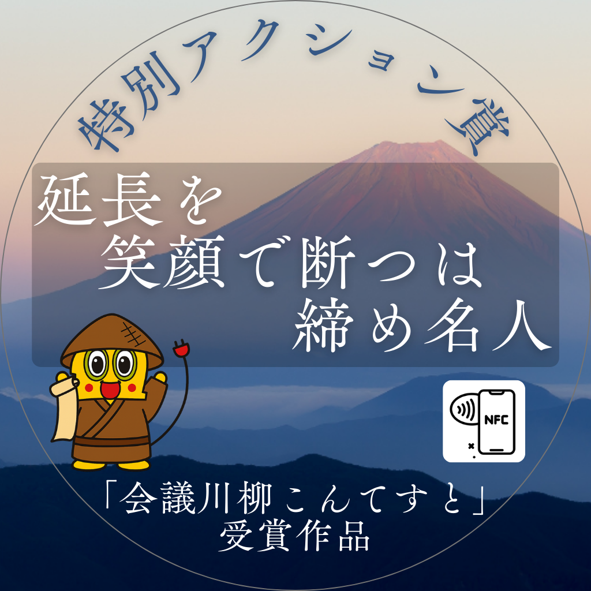
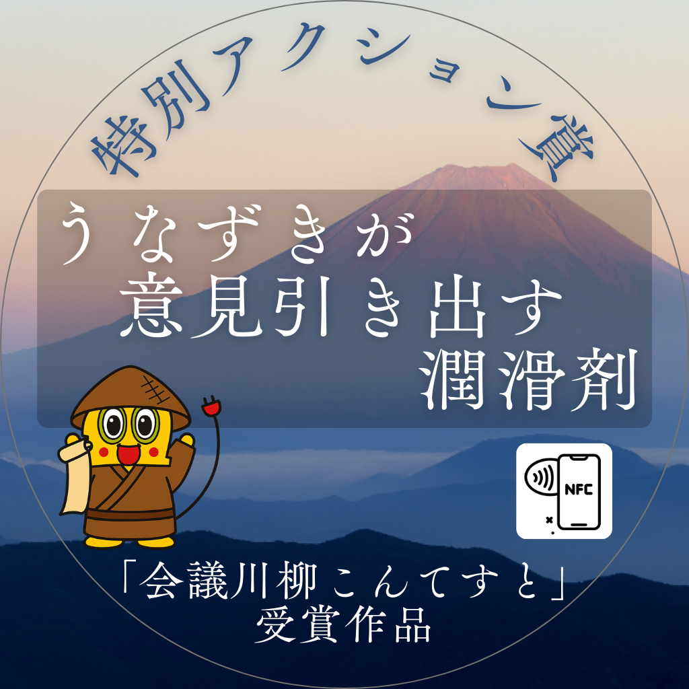
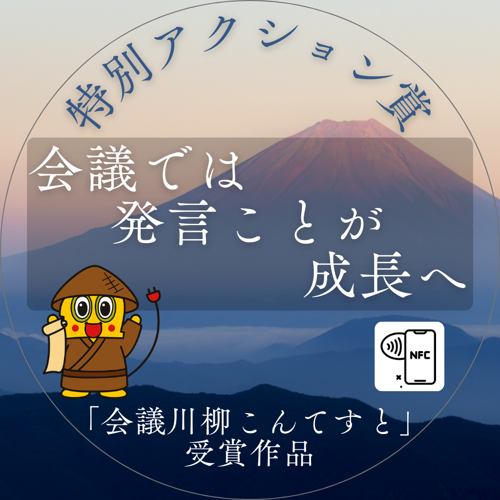
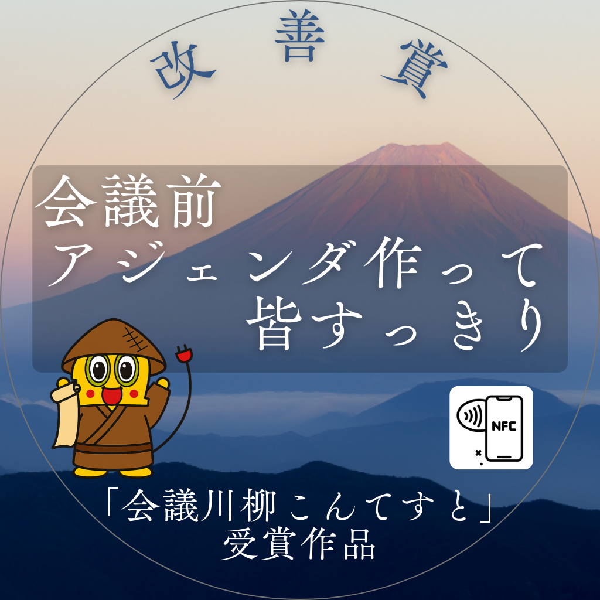

会議川柳 受賞作品
 大賞【小沼賞】
それいいね その一声が 場を変える
大賞【小沼賞】
それいいね その一声が 場を変える
 大賞【働き方改革賞】
この会議 私必要？ 地蔵時間
大賞【働き方改革賞】
この会議 私必要？ 地蔵時間
 優秀賞【特別アクション賞①】 延長を 笑顔で断つは 締め名人
 優秀賞【特別アクション賞②】 うなずきが 意見引き出す 潤滑剤
 優秀賞【特別アクション賞③】 会議では 発言ことが 成長へ
 優秀賞【改善賞】 会議前 アジェンダ作って 皆すっきり
【モモっと賞】 良案を 提示で帰る みな定時
【クスッとのき賞】 打合せ 議題は次の 打合
【Our100th賞】 イマイチと 言うなら出そう 代替案
【ルーキー賞】 共鳴は 沈黙の中 芽吹く声
【一番早いで賞】 長いのに 簡単ですが 以上です
【ラストワン賞】 皆やる気 話まとまる しかいよし
【言葉の魔術師賞】 ニッチです ニュー言語が 認っ知です
【想いが伝わったで賞】 所要時間 守ってくれて ありがとね！
【共感できるで賞】 助かるよ クリック一つの 意思表示
【これはダメで賞】 打ち合わせ 会話はいつも にてらごし
【会議PJメンバー賞】 「飽き」深き 隣は何を する人ぞ
再生ボタンを押すと音が流れます
本ページ内の音声は VOICEVOX（ちび式じい）を使用して作成しています。